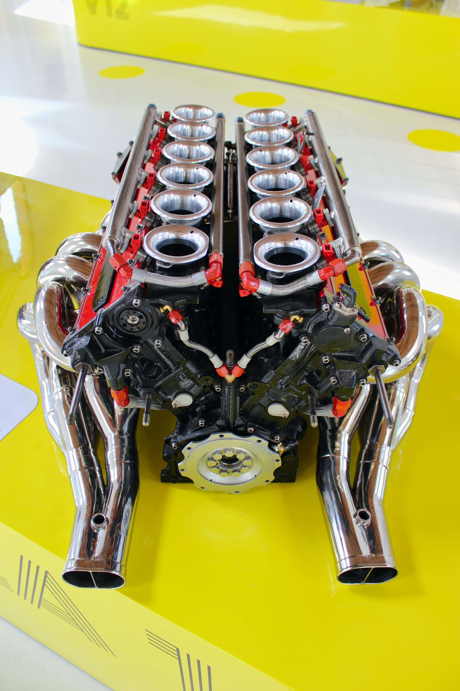
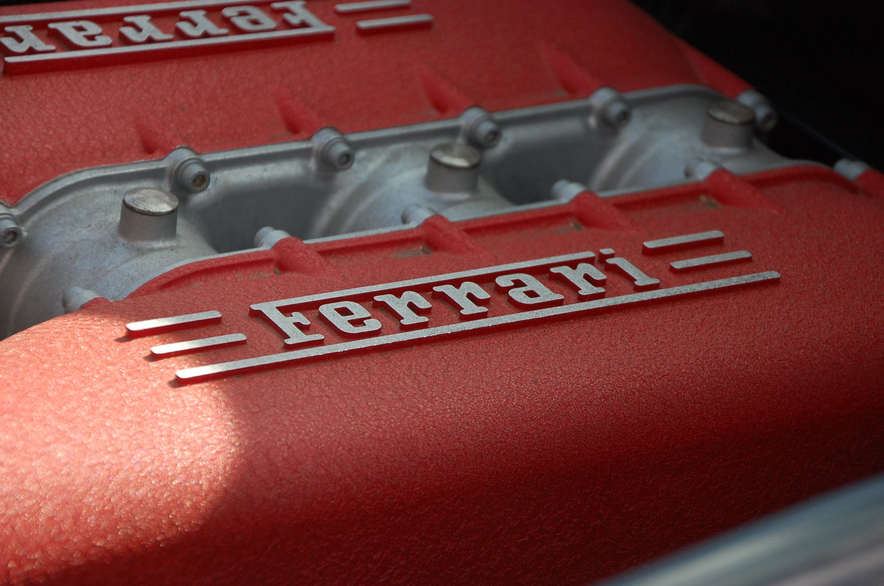
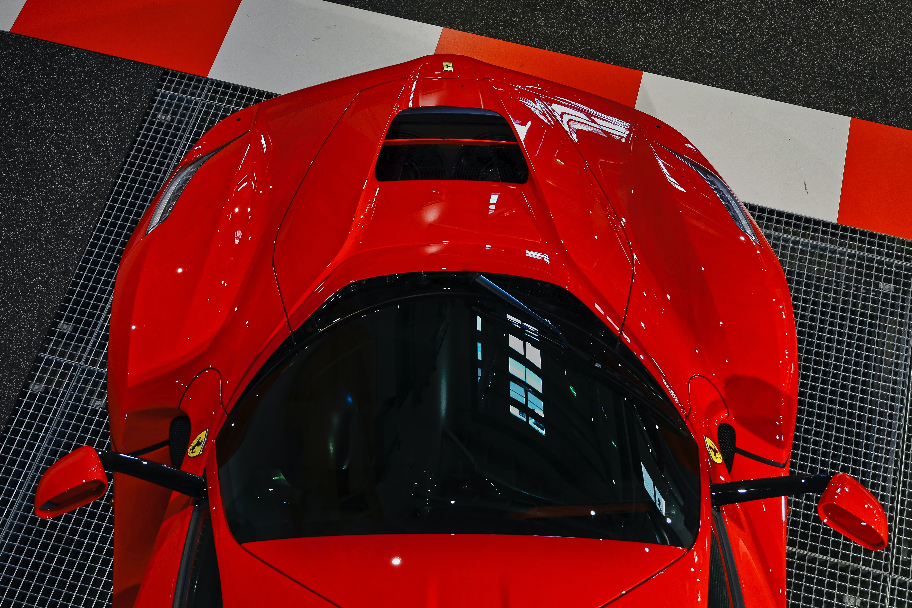
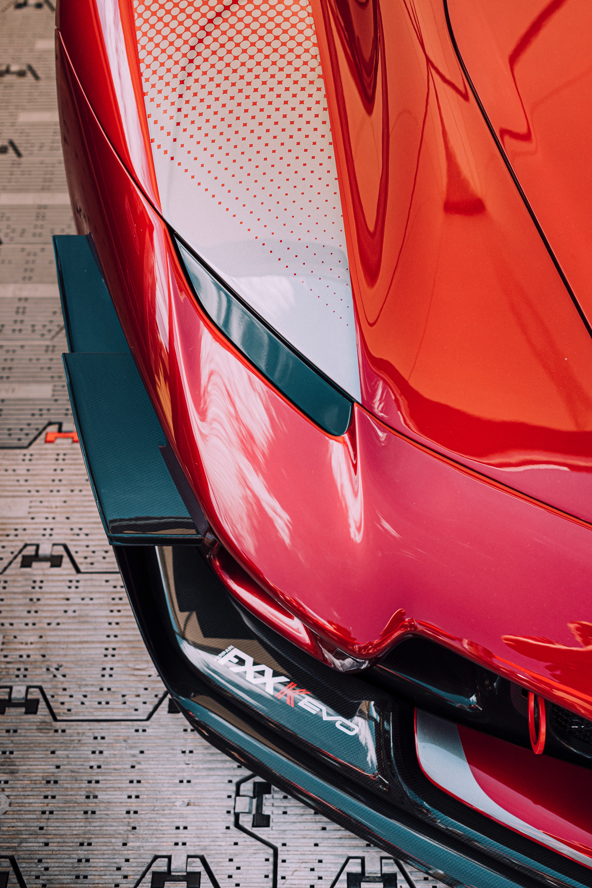
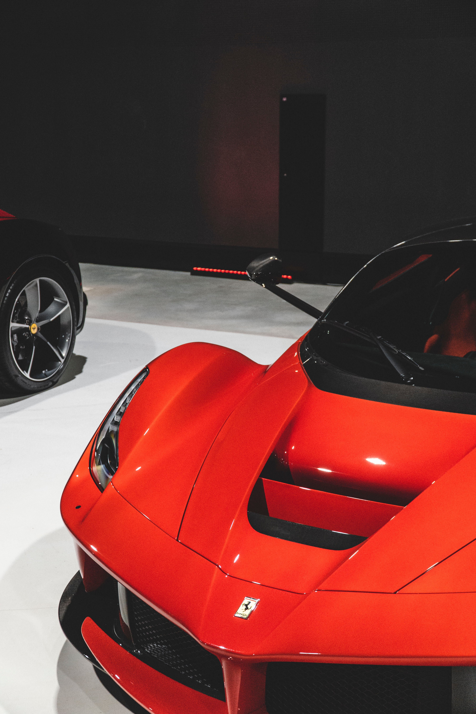
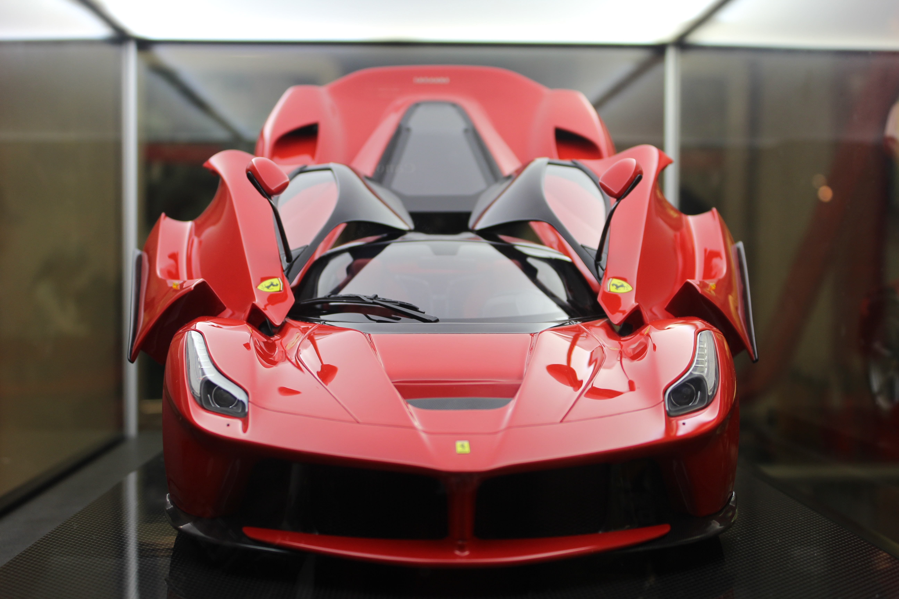

High-Performance Engines
The 6262cc V12 produces 800 CV and the electric motor a further 120 kw (163 CV) for a total of over 960 CV.
Aerodynamic Play
The LaFerrari’s architecture represents the pinnacle of innovation even by Ferrari’s legendary standards. The objective was to increase aerodynamic efficiency, deliver ideal weight distribution, lower the car’s centre of gravity as far as possible, and, most importantly of all, seamlessly integrate the new hybrid system.All of this and more has been achieved without impinging on cabin space, comfort or accessibility.




striking design
The LaFerrari's overall silhouette and proportions are the very natural product of its architecture and the layout of its hybrid running gear.